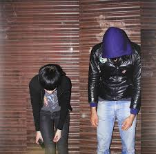

Crystal Castles foi um grupo de eletrônica formada em 2006 na cidade de Toronto, Canadá. O duo é conhecido por apresentações caóticas ao vivo e pela sonoridade lo-fi e melancólica de suas produções, que misturadas com sons de jogos eletrônicos antigos e com os vocais distorcidos da ex-integrante Alice, têm um resultado final ruidoso e único.
